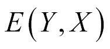
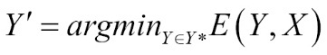
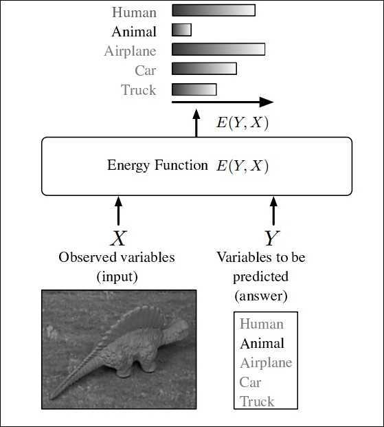
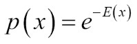

"What I cannot create, I do not understand." | ||
| --Richard Feynman | ||
So far in this book, we have only discussed the discriminative models. The use of these in deep learning is to model the dependencies of an unobserved variable y on an observed variable x. Mathematically, it is formulated as P(y|x). In this chapter, we will discuss deep generative models to be used in deep learning.
Generative models are models, which when given some hidden parameters, can randomly generate some observable data values out of them. The model works on a joint probability distribution over label sequences and observation.
The generative models are used in machine and deep learning either as an intermediate step to generate a conditional probability density function or modeling observations directly from a probability density function.
Restricted Boltzmann machines (RBMs) are a popular generative model that will be discussed in this chapter. RBMs are basically probabilistic graphical models that can also be interpreted as stochastic neural networks.
Stochastic neural networks can be defined as a type of artificial neural network that is generated by providing random variations into the network. The random variation can be supplied in various ways, such as providing stochastic weights or by giving a network's neurons stochastic transfer functions.
In this chapter, we will discuss, a special type of Boltzmann machine called RBM, which is the main topic of this chapter. We will discuss how Energy-Based models (EBMs) are related to RBM, and their functionalities. Later in this chapter, we will introduce Deep Belief network (DBN), which is an extension of the RBM. The chapter will then discuss the large-scale implementation of these in distributed environments. The chapter will conclude by giving examples of RBM and DBN with Deeplearning4j.
The organization of this chapter is as follows:
The main goal of deep learning and statistical modeling is to encode the dependencies between variables. By getting an idea of those dependencies, from the values of the known variables, a model can answer questions about the unknown variables.
Energy-based models (EBMs) [120] gather and collect the dependencies by identifying scaler energy, which generally is a measure of compatibility to each configuration of the variable. In EBMs, the predictions are made by setting the value of observed variables and finding the value of the unobserved variables, which minimize the overall energy. Learning in EBMs consists of formulating an energy function, which assigns low energies to the correct values of unobserved variables and higher energies to the incorrect ones. Energy-based learning can be treated as an alternative to probabilistic estimation for classification, decision-making, or prediction tasks.
To give a clear idea about how EBMs work, let us look at a simple example.
As shown in Figure 5.1, let us consider two sets of variables, observed and unobserved, namely, X and Y respectively. Variable X, in the figure, represents the collection of pixels from an image. Variable Y is discrete, and contains the possible categories of the object needed for classification. Variable Y in this case, consists of six possible values, namely: air-plane, animal, human, car, truck, and none of the above. The model is used as an energy function that will measure the correctness of the mapping between X and Y.
The model uses a convention that small energy values imply highly related configuration of the variables. On the other hand, with the increasing energy values, the incompatibility of the variables also increases equally. The function that is related to both the X and Y variable is termed as energy function, denoted as follows:

In the case of energy models, the input X is collected from the surroundings and the model generates an output Y, which is more likely to answer about the observed variable X. The model is required to produce the value Y/, chosen from a set Y*, which will make the value of the energy function E(Y, X) least. Mathematically, this is represented as follows:

The following Figure 5.1 depicts the block diagram of the overall example mentioned in the preceding section:

Figure 5.1: Figure shows a energy model which computes the compatibility between the observed variable X and unobserved variable Y. X in the image is a set of pixel and Y is the set of level used for categorization of X. The model finds choosing 'Animal' makes the values of energy function least. Image taken from [121]
EBMs in deep learning are related to probability. Probability is proportional to e to the power of negative energy:

EBMs define probabilities indirectly by formulating the function E(x). The exponential function makes sure that the probability will always be greater than zero. This also implies that in an energy-based model, one is always free to choose the energy function based on the observed and unobserved variables. Although the probabilities for a classification in an energy-based model can arbitrarily approach zero, it will never reach that.
Distribution in the form of the preceding equation is a form of Boltzmann distribution. The EBMs are hence often termed as Boltzmann machines. We will explain about Boltzmann machines and their various forms in the subsequent sections of this chapter.